The pipeline
Each stage in turn: what it's for, what goes in and what comes out, its settings panel by panel, and what to do when something doesn't look right.
6 Scene Cut #
Scene Cut chops a whole movie into short clips, one for every shot, ready for DepthCrafter. You'll find it in the Extra tab, under Scene Cut.
Why every shot needs its own clip
DepthCrafter is a temporal model: it works on a run of frames at once and keeps the depth of the same scene consistent from frame to frame, so things don't flicker nearer and further. That's exactly what goes wrong across a cut. With several shots in one clip, it tries to keep unrelated scenes consistent with each other, and the depth map quickly loses quality.
The later stages benefit too: Inpainting also works through a clip in pieces, and a fill that suddenly changes scene halfway through looks wrong.
Before you start: the model files
Scene Cut finds the cuts with an AI. Each detector needs its own model file in the
weights/SceneCut folder inside your Studio folder:
ckpt_0_200_0.pth | AutoShot |
transnetv2-pytorch-weights.pth | TransNetV2 |
OmniShotCut_ckpt.pth | OmniShotCut |
DINOv3/ (the whole folder) | Validate cuts with DINOv3 (optional) |
You only need the ones you'll use. If a file is missing, Scene Cut tells you which one rather than failing.
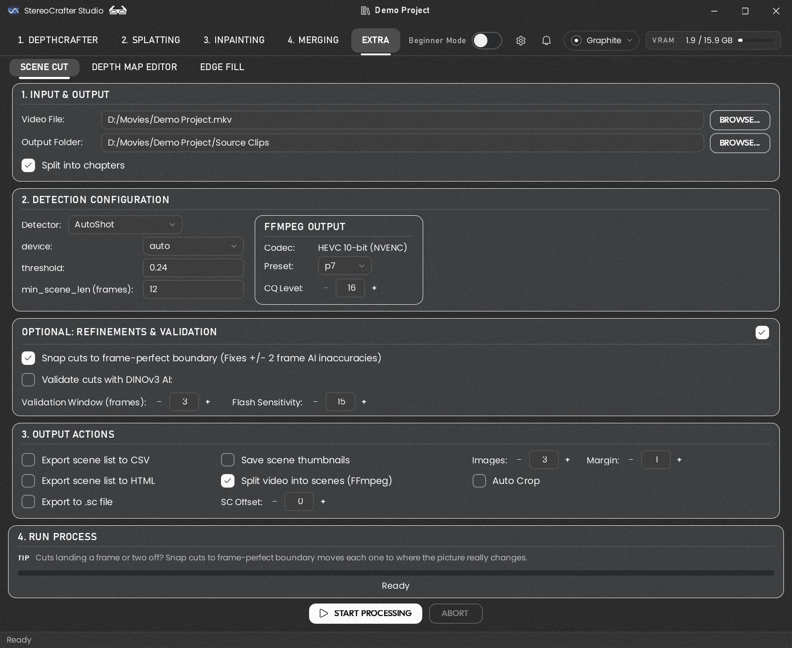
1 2 3 4 51 Input & Output
- Video File: the movie to cut. Use Browse…, or drop the file onto the field.
- Output Folder: where the clips go. With a project folder set (Part 1, section 4) it's filled in with your Source folder, and Split into chapters is turned on. Scene Cut always takes the whole movie, so it has no chapter list. Change the folder and Studio keeps yours for that project.
- Split into chapters (on from the start) files the clips into one folder per chapter,
the way your project is laid out. It uses the chapter markers inside the movie file, which a
Blu-ray or DVD rip usually has. An existing
Chapter Nfolder is reused; a missing one is made and named from the marker. A shot that runs across a chapter start is cut there.
2 Detection Configuration
Detector picks the AI that finds the cuts:
- AutoShot: a good all-rounder. Try it first.
- TransNetV2: a second opinion for the same kind of footage.
- OmniShotCut: better for cartoons, anime, games and screen recordings. It also understands fades and dissolves.
The settings beside it change with the detector. For AutoShot and TransNetV2:
- device: leave on auto, which uses your graphics card.
- threshold: how sure the AI must be to call something a cut. Lower finds more cuts, including some that aren't real; higher finds fewer.
- min_scene_len: the shortest a clip may be, in frames. Anything shorter joins the clip next to it, so a camera flash doesn't become a clip of its own.
OmniShotCut has its own: clean_shot mode keeps only hard cuts and folds fades into the shot before them (start with this); a confidence above 0 drops the doubtful cuts (raise it in small steps, such as 0.3).
FFmpeg Output sets how the clips are saved. They're always high-quality 10-bit video, made on your graphics card. Preset trades speed for quality (p7 is the best and the default) and CQ Level sets the quality (lower is better and bigger; 16 is already high).
3 Refinements & Validation
- Snap cuts to frame-perfect boundary: leave it on. It nudges each cut onto the exact frame, so no clip starts with a frame of the shot before.
- Validate cuts with DINOv3 AI: a second, slower AI double-checks every cut and throws away false alarms from camera flashes, fast movement and near-black frames. Turn it on if you're getting cuts where nothing changed. Validation Window and Flash Sensitivity fine-tune it; the defaults are fine for most films.
4 Output Actions
- Split video into scenes: the one that matters, on from the start. It writes each shot out as its own clip, which is what DepthCrafter works on.
- Auto Crop (with Split video into scenes; on from the start): crops each shot to its own picture, for movies whose shape switches -- an IMAX sequence at 1.90:1 in a 2.39:1 film, a 4:3 flashback in a 16:9 show. It reads the black bars across the whole movie first, finds the few bar sizes it really uses, and gives each shot the one that fits it, so a dark shot is never cropped into. The crop happens on the graphics card as each shot is decoded, so it costs next to no time. The later stages handle the mixed shapes: turn on Auto Size for the Loaded Clip in DepthCrafter and Splatting so each clip runs at its own shape's size, and each clip's shape shows in Upcoming Jobs.
- Export scene list to CSV / HTML: a list of every shot with its start and end times, as a spreadsheet or a web page.
- Export to .sc file: the cuts as a list DaVinci Resolve can read, so they appear on its timeline. SC Offset shifts them a few frames if your timeline counts from somewhere else.
- Save scene thumbnails: a few stills from each shot, so you can see what's in it without opening it. Images is how many, Margin how many frames in from each end they're taken.
5 Run Process
Press Start Processing. The bar shows how far along it is; Abort stops it. A whole movie takes a while, mostly for writing the clips. Open Console, at the right of the Run Process heading, shows the run as it goes, with its progress bar, on the console's Extra tab.
When it's done, go to 1. Depth Map and press Import from Scene Cut: its input is filled in with the new clips.
Using another tool instead
If you'd rather cut the movie elsewhere, a few things keep the clips at their best:
- One clip per shot, cut on the exact frame.
- Keep the quality high. Every later stage builds on these clips, so export at high quality, ideally 10-bit.
- Save them into the chapter's Source folder, such as
DM Source Clips/Chapter 1 - Opening.
When the cuts aren't right
| Cuts are missed | Lower the threshold a little, or try another detector. On animation or games, try OmniShotCut. |
| Cuts where nothing changed | Raise the threshold, or turn on Validate cuts with DINOv3 AI. Flashes and strobes are the usual cause. |
| Lots of tiny clips | Raise min_scene_len, so very short pieces join their neighbours. |
| No chapter folders | Split into chapters needs chapter markers inside the movie file. If yours has none, leave it off and sort the clips into chapter folders yourself. |
7 Depth Map: DepthCrafter #
Depth Map is the first numbered stage. It has two tabs, one per model: DepthCrafter, described here, and VDA (Video Depth Anything), described at the end of this section. DepthCrafter looks at each clip and makes its depth map: a black-and-white video of the same shot where white is near and black is far. Everything after it builds the 3D from this map, so a good depth map matters more than anything else in the pipeline.
| Reads | Your clips, one per shot, from the chapter's Source folder. |
| Writes | One depth map per clip into the chapter's DepthMaps folder, named
after the clip with _depth added: chase_001.mp4 gives
chase_001_depth.mp4. |
| Then | Each clip it has finished moves into finished inside the
Source folder (Part 1, section 4), where Splatting picks it up. A clip that fails moves into
failed instead, so you can see which ones need another look. Untick
Resume (in Frame & Segment Control) to leave the clips where they are; Splatting
then needs its Source Clips pointed at the Source folder itself. |
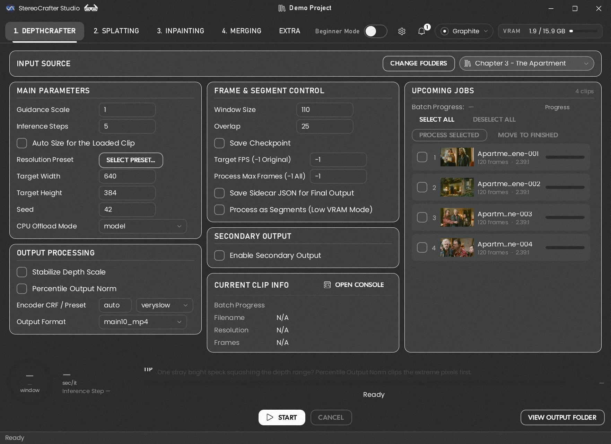
1 2 3 4 5 6 7 81 Input Source
With a chapter picked, the folders are filled in for you and folded away; Change Folders shows them. On Manual paths you set them yourself with Browse, which opens Studio's folder picker: each level of folders side by side, each folder showing how many clips it holds, and the open folder's clips in the last column. Click a folder to open it, double-click it (or press Select Folder) to use the whole folder; click a clip and press Select Clip to process just that one. A folder of numbered image frames counts as one video. Every stage's folder fields use the same picker.
After Scene Cut has split a movie, Import from Scene Cut appears here and fills the input with its clips.
2 Main Parameters
- Resolution Preset: the size the clips are worked on at. Studio comes with no presets: you make your own in Settings (below), a column per aspect ratio, each size with how far it is from the true shape, for example 640×448 (7.1% wider). Until you do, the menu says where to make them. Press Select Preset… and pick a size; a column with more than three sizes scrolls. Start with 768 wide (see the note below). The preset fills in Target Width and Target Height; if you type your own, both must be multiples of 64. Once a clip is loaded, the menu shows only the sizes for that clip's shape, with its Auto Size pick.
- Auto Size for the Loaded Clip (off until you tick it): loading a clip fills Target Width and Height with the size picked for its shape -- 768 wide, with the height (a multiple of 64) nearest the clip's shape, unless you've picked another for that shape in Settings (below). The picked size is marked auto in the Resolution Preset menu, and you can still change it. In a folder of mixed shapes, the clips shaped like the loaded one run at Target Width and Height, and every other clip runs at its own shape's pick.
- Inference Steps: how many passes the AI makes over each window. See the note below.
- Guidance Scale: leave it at 1. It's an advanced control, and Beginner Mode hides it.
- Seed: the AI's starting point. The same seed and settings give the same depth map again; -1 picks a new one every run.
- CPU Offload Mode: saves graphics memory by keeping parts of the AI in normal memory until they're needed. model suits most cards. If you run out of memory, try sequential (slower); with lots of memory, none is fastest.
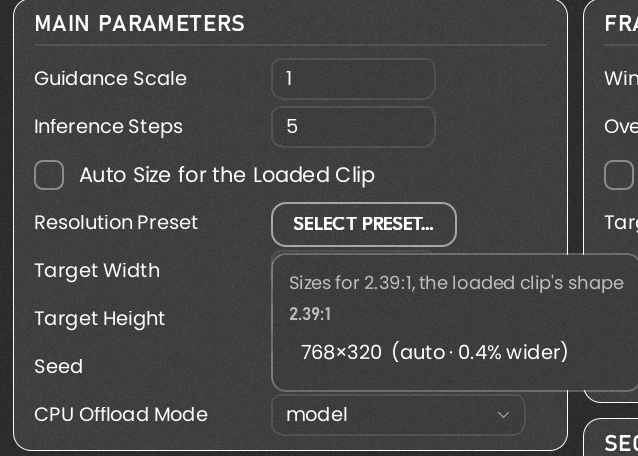
3 Frame & Segment Control
- Window Size: how many frames the AI looks at together. This is what makes DepthCrafter a temporal model: within a window, the depth stays steady from frame to frame. Bigger windows are steadier but need more memory; 60 to 120 is typical, and Studio starts at 60.
- Overlap: how many frames each window shares with the next, so the depth blends where they meet instead of jumping. Studio starts at 45; more blends more smoothly and takes longer. It must be smaller than the window.
- Save Checkpoint: saves the AI's slow work on each clip once it's done, before the depth video is written. If something goes wrong after that, or you run the clip again with the same settings, Studio offers to pick up from there instead of doing the slow part again. On from the start: it costs a little disk space while a clip runs.
- Target FPS and Process Max Frames: leave both at -1 (the clip's own frame rate, every frame). Anything else makes a depth map that doesn't line up frame for frame with the clip. Beginner Mode hides both, and keeps Target FPS at -1.
- Save Sidecar JSON for Final Output: a small file beside each depth map recording the settings used. It doesn't change the depth map.
- Process as Segments (Low VRAM Mode): for very long clips or small graphics cards. See below.
4 Output Processing
- Stabilize Depth Scale: each window is worked out on its own, so over a long clip the whole scene can slowly drift nearer and further, like it's breathing. This evens it out against one reference frame. Turn it on for clips longer than one window; it does nothing useful on short ones.
- Percentile Output Norm: one stray bright or dark speck can squash the depth of everything else. This ignores the most extreme pixels when setting the depth range, for better contrast. Its Auto Top switch is for clips where something comes right up to the camera for a moment (a person walking past the lens): the range is then set from the frames that show the usual scene, so the passer-by clips to white and the scene keeps its full depth instead of being squeezed dark. A clip without such a moment comes out the same.
- Encoder CRF / Preset: quality and file size. Leave them on auto and veryslow; saving is quick next to the depth work.
- Output Format: main10_mp4 (the default) stores finer depth steps than plain mp4, so smooth surfaces don't show bands. The image-sequence formats save one picture per frame and take much more space.
5 Secondary Output
Makes a second depth map for each clip, with its range set more firmly so things entering or leaving the frame don't shift the rest of the depth. It's an extra for experimenting; most people leave it off.
6 Current Clip Info
The clip being worked on, its size and frame count, and how far through the batch you are. Open Console shows the detail. While it runs, the line under the progress bar reads Processing video 3 of 20, adding segment 2 of 4 when the clip is done in segments.
7 Upcoming Jobs
To the right of the settings: the clips in the input folder that Start will process, each with its own bar while the batch runs. Tick clips and press Process Selected to do just those, or right-click one for Process This Clip Now, Move to Finished or Play Source Clip (see Upcoming Jobs).
8 The action bar
- While a clip runs, the ring shows the current window, with the time each step takes beside it, and the bar shows the clip's progress. The TIP line above it offers a hint now and then.
- Start works through every clip in the input.
- Cancel asks how to stop: now, losing the clip in progress, or after this segment, keeping what's finished so the next run carries on.
- View Output Folder opens the depth maps' folder, even during a run.
Process as Segments
Normally a clip is worked on as one piece. With Process as Segments on, a long clip is split into pieces, each piece gets its own depth map, and the pieces are joined back together. Use it for very long clips, or when your graphics card runs out of memory.
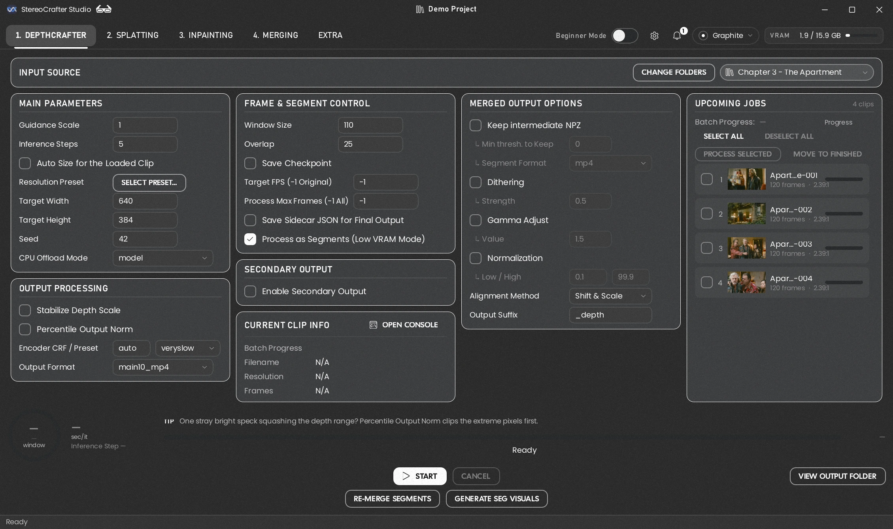
1 2- Alignment Method: how neighbouring pieces are matched where they overlap. Shift & Scale fits each piece to the one before; Linear Blend fades between them. If the depth jumps where pieces join, try the other.
- Normalization, Dithering and Gamma Adjust fine-tune the joined depth map: ignoring extreme specks, hiding banding, and pulling the middle of the scene nearer or further.
- Keep intermediate NPZ keeps each piece's raw depth after joining, so you can join them again later with different options.
- Output Suffix: leave it as
_depth. Splatting looks for that name. - Re-Merge Segments joins a finished clip's pieces again with the current options, without redoing the slow depth work (it needs the kept NPZ files). Generate Seg Visuals saves a viewable copy of each piece, to check one that looks wrong.
In Settings
With the DepthCrafter tab showing, Settings lists its extra options:
- Load Settings / Save Settings As, to keep a set of settings for a kind of footage, and Reset to Default.
- Restore Finished / Failed Input Files moves clips back out of
finishedorfailed, so you can run them again. - Use SageAttention (Faster) speeds the AI up on cards that support it. Use Local Models Only skips the online check for the model files at the start of a run, once you have them.
- Enable Debug Logging adds detail to the console, for troubleshooting.
Custom Resolution Presets, under those options, makes your own sizes for the Resolution Preset menu. Pick an Aspect ratio, then open Sizes and tick the ones you want. Every size there is a multiple of 64, as DepthCrafter needs, from 256 wide up to about 1080p; at each width you get the heights just under and just over the true shape, each with how far off it is (exact, 7.1% wider, 6.2% taller). For an exact size of your own, type it into Add a size (width × height, both multiples of 64) and press Add: it's ticked and listed with the rest. Tick sizes in as many ratios as you like, then Save Presets: they appear in the menu at once, a column per ratio. Untick a size and save to take it out again; Remove All Presets (click it twice) empties the menu.
The same window holds the Auto Size picks: for each aspect ratio, the size Auto Size for the Loaded Clip uses for a clip of that shape. Each shows its default (768 wide) until you choose another.
When something isn't right
| Out of memory | Pick a smaller preset, lower Window Size, set CPU Offload Mode to sequential, or turn on Process as Segments. Close other programs that use the graphics card. |
| Depth slowly breathes | Turn on Stabilize Depth Scale. |
| Depth jumps partway through | Raise Overlap, so windows blend over more frames. |
| Everything looks flat | Turn on Percentile Output Norm: a few extreme pixels are probably squashing the range. |
| Bands on smooth surfaces | Use main10_mp4 as the Output Format. |
| Not enough detail | Check Inference Steps is at 10 to 15, not the quick-test 5. Only if the scene still needs it, try the next preset up (960, then 1152). |
| Separation looks exaggerated, or things sit at the wrong depth | The preset is probably too high for the scene. Go back to the 768-wide one. |
| The depth mixes two scenes | The clip has a cut in it. Cut it into one clip per shot (section 6). |
Video Depth Anything (the VDA tab)
DepthCrafter's page has two tabs at the top. The second, VDA (Video Depth Anything), makes depth maps with a different, much faster model: seconds per clip instead of minutes. Its maps are sharp at the edges and steady over time, and go where DepthCrafter's go, under the same name, so Splatting reads them the same way. Try it first; keep DepthCrafter for the shots it gets wrong.
It has its own Input Folder/File and Output Folder (a chapter fills them as it fills DepthCrafter's), its own Upcoming Jobs and its own Resume. Image-sequence folders are DepthCrafter's: this tab takes videos.
| Model | In the Video Depth Anything section. Small is quickest, Large the most detailed, Base in between. Each is its own download: Download Weights appears on the tab when the one picked isn't there, or use Settings > Studio > Models. Small is free for any use; Base and Large are for non-commercial use only (their licence, CC-BY-NC-4.0). |
| Weights | Where the model files come from: Studio's own models folder, or a folder
you already have. If you use iw3, its Video Depth Anything files are already on your PC: press the folder
button and pick your iw3 folder, and Studio finds its checkpoints folder inside -- nothing to
download. The row then names it and the sizes it has (iw3 · Large); a size that isn't there
comes from Studio's models folder. The row shows only while the size you picked can't be found; once it is,
the row folds away, and File > VDA Weights Folder... changes the folder, or Use Studio's Models
Folder Only goes back. |
| Input Size | The short side of the picture the model looks at, a multiple of 14: type one, or pick from the list on the button beside the box (a typed size goes up to the next multiple of 14). 518 is what it's trained at. Higher keeps finer detail and needs more time and memory. The map is written at about this size; Splatting scales it to its own. |
| Mode | Online runs the clip in overlapping 32-frame windows, each joined to the one before, so it needs the same memory however long the clip is. Offline is the model's own reference way and holds the whole clip in memory: for short clips. |
| Half Precision (FP16) | About twice as fast; the maps look the same. |
| Normalise | Whole clip spreads the clip's nearest-to-farthest over the whole black-to-white range once, as DepthCrafter does, so a thing keeps its depth however the rest of the shot changes. EMA lets the range follow a long shot whose depth really changes, eased by Decay and looking Buffer frames ahead. |
Replacing a DepthCrafter map. When the output folder already holds a DepthCrafter map of the
clip, it moves into a DepthCrafter folder inside the output folder, and the new map takes its
place, so Splatting shows the new depth straight away, with a VDA badge on the clip in its list. Nothing is lost: with Splatting's
Multi-Map on, that folder is one of the maps it offers. A later Video Depth
Anything run of the same clip simply replaces its own earlier map.
In Splatting, right-click a clip in Upcoming Jobs and choose Rerun with Video Depth Anything: this tab opens with that clip as its input and the clip's depth-map folder as its output. Press Start.
While it runs, the console's Depth Map tab shows each clip's progress as a bar: the depth pass, then the encode, with frames done, speed and time left.
8 Splatting #
Splatting turns each clip and its depth map into the second eye's view. Every pixel is shifted sideways by how near it is: near things move a lot, far things hardly at all. This is where your main 3D effect editing happens: how deep the 3D is, where the screen sits, how clean the edges are, and the Special FX.
| Reads | The clips DepthCrafter has finished (in the Source folder's
finished) and their depth maps from the DepthMaps folder. Each depth map must be
named after its clip plus _depth. |
| Writes | Into the chapter's Splats folder: a full-size result in
hires and a smaller copy in lowres for Inpainting. Both still have
holes where the shift uncovered something the camera never saw; Inpainting fills them
next. |
| Per clip | The settings you choose for a clip can be saved with it in a small sidecar file (8f), so every clip can have its own 3D. |
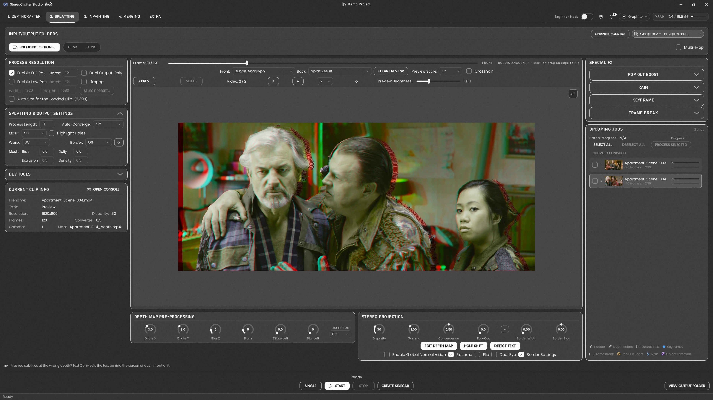
1 2 3 4 5 6 7 8 98a Folders and the clip list
With a chapter picked, the folders fill in by themselves. The folder panel also holds Encoding Options… (how the results are saved, 8g), the 8-bit / 10-bit buttons that set it in one click, and Multi-Map (8f).
Upcoming Jobs lists the chapter's clips. Click a clip to load it into the preview; right-click it for Splat This Clip Now, Rerun in DepthCrafter or Rerun with Video Depth Anything (see Upcoming Jobs).
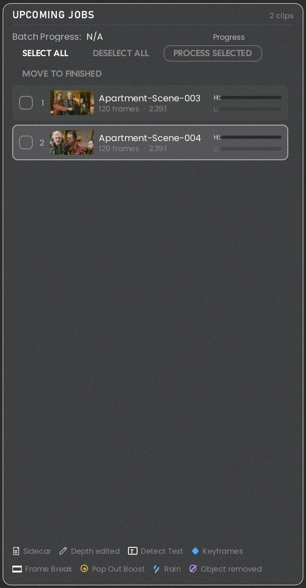
- Tick boxes pick clips. Select All and
Deselect All do it in one go. Process Selected
converts only the ticked clips; Move to Finished moves them into
finishedwithout converting them, for clips you've decided not to use. - Little badges on a clip show what's set for it: a sidecar, Pop Out Boost, Keyframes, Frame Break, Rain (three blue streaks), a depth map edited in the Depth Map Editor (a pencil), a depth map made by Video Depth Anything (VDA), or a saved Detect Text mask (a T), or an object taken out with Erase from Clip (a violet circle struck through -- Merging's list shows it too, where Put Back lays it back). The sidecar's badge sits beside the progress bars; the others on a line under the clip's name, so a row with any of them is a little taller. A legend under the list says which is which.
- Start converts every clip in the list; Single converts only the one in the preview. To convert just some of them, tick those clips and press Process Selected.
- Resume (in Stereo Projection): finished clips move into
finished, so if you stop and start again, the batch carries on with the rest. Leave it on.
8b The preview
The preview shows a frame of the clip exactly as it will be converted, and updates as you change settings. It shows two views, Front and Back: click the picture to flip between them, or grab its left or right edge and drag it across to turn it over by hand (let go before halfway and it falls back). Every view, what it shows and what it's for: Appendix D.
- Dubois Anaglyph (the usual Front) is red/cyan 3D: wear red/cyan glasses to judge depth on any screen. Other choices include plain side-by-side, cross-eye, a Wigglegram that rocks between the eyes, the depth map, and Splat Result: the new eye on its own (the usual Back).
- Glasses-Free 3D needs a glasses-free 3D monitor on Leia's SR platform (Samsung's Odyssey 3D, for one), with Studio's window on it; without one it is greyed out, and its tip says what's missing (its caveats: Appendix D). Only the picture turns 3D, with each eye at full resolution; the rest of the window stays as it is. The 3D follows your eyes while nothing is running. While a job runs, it holds the last frame and the eye-tracking camera stays off. Choose another view and the camera and the 3D lens switch off. Tick Keep Tracking (beside the view, while Glasses-Free 3D is chosen) to keep the camera on between clips, in and out of Full Preview and while a job runs, so the 3D doesn't have to find you again each time. It still switches off on another tab or view, and when Studio closes.
- Full Preview: the full-screen icon in the preview's top-right corner (or F11) shows the preview full screen, for watching on a 3D TV or monitor. It opens on the screen Studio is on the first time; move it to another with Win+Shift+←/→ and it opens there from then on. With Glasses-Free 3D facing you, its picture is the one shown in 3D while it is open; the page's picture shows it again once it is closed. Esc or F11 closes it, or the X in the top-right corner. The X and a frame slider near the bottom show for a moment when it opens and again whenever you move the mouse (in Glasses-Free 3D too, over the 3D picture); the playback keys work there as on the page. In Splatting, Convergence, Disparity (Depth Strength) and Gamma dials float under the slider, so you can tune the 3D while you watch. They are the page's own dials: keyframes work on them as on the page.
- The frame slider, ‹ Prev / Next › (clips), play and fast-forward move around. Keys: ← → a frame (Shift for 10), ↑ ↓ the next or previous clip, Space play.
- Double-click to zoom in on a spot, and again to see the whole frame; the mouse wheel zooms too. Preview Scale sets the size: Fit (the first choice, and how Studio starts) fills the space the preview has and keeps it filled as the window or the clip changes, up to 250%; pick a percentage, or zoom with the wheel or a double-click, to hold a size instead (a double-click on a zoomed-in picture goes back to Fit). Preview Brightness lightens dark scenes (double-click it, or right-click it, to go back to 1.0), and Crosshair marks the screen centre, which helps with Convergence. In Glasses-Free 3D it is drawn in both eyes, so it sits at screen depth. None of these change the saved files.
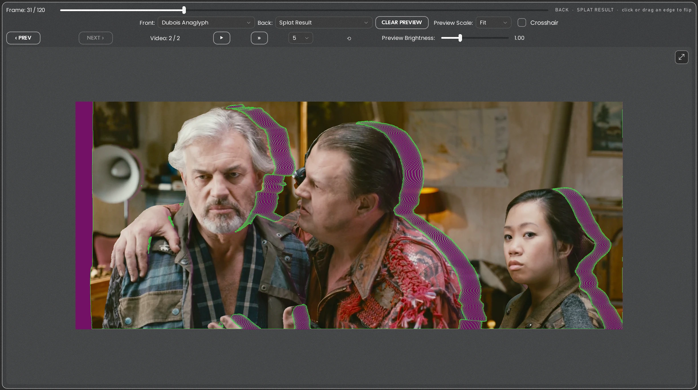
8c The 3D look
Stereo Projection sets the 3D itself:
- Disparity (Depth Strength): how strong the 3D is. Higher gives more depth, but also bigger holes to fill, and very high values are hard on the eyes. The ≈ button beside the knobs measures how strong it really gets across the clip.
- Convergence: where the screen sits in the scene. 1.0 puts everything behind the screen, like looking through a window; lower values bring things out toward you, and 0.0 makes everything pop out. 0.8 is a good start.
- Gamma: reshapes the middle distance. Above 1.0 brings it nearer, below 1.0 pushes it back.
- Pop-Out: more pop for whatever is in front of the screen, with the rest of the scene left where it is. Everything at or behind the screen stays exactly put, subjects just in front of it barely move, and the nearest things get the full extra. It's spread over the whole front of the scene, so it bends outlines much less than Pop Out Boost for the same pop. It goes up to 60, in the same units as Disparity. It's saved with the clip and can be keyframed.
- Border Width and Border Bias (shown with Border Settings): black edges at the sides of the frame, so things that pop out aren't cut off by the edge of the screen. The Border setting in Splatting & Output Settings can work them out for you (Auto Basic, Auto Adv.).
- Dual Eye builds both eyes from your video and splits the shift between them, so each eye has smaller holes. Flip mirrors a clip where things move left to right; Merging flips it back at the end.
Depth Map Pre-processing (Edge Alignment) tidies the depth map before the 3D is built, so depth edges line up with the edges of objects and outlines don't shimmer:
- Dilate X / Y (Expand X / Y) grow near objects' outlines in the depth map, so their 3D edge covers the whole object (below 0 shrinks them).
- Blur X / Y soften depth edges, smoothing jagged or flickering outlines. Too much makes edges soft.
- Dilate Left (Expand Left), Blur Left and Blur Left Mix do the same for left-facing edges only.
8d Special FX and keyframes
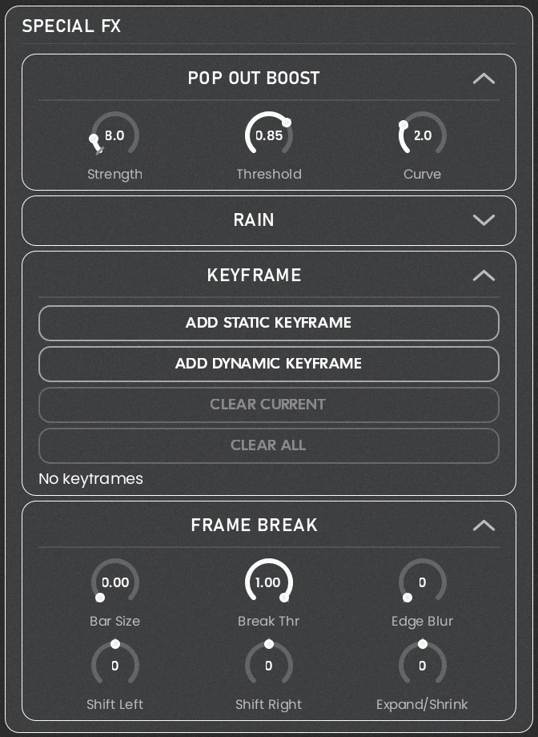
- Pop Out Boost: use the Pop-Out dial in Stereo Projection (8c) first, for a clean enhancement of foreground elements. Boost is meant to work together with that dial to create "right in front of your face" pop when the dial alone isn't enough. It pushes only what is nearer than a set depth further out of the screen, and it has a higher risk of warping the edges of objects. Strength (up to 60, in the same units as Disparity) turns it on; Threshold sets how near something must be, and Curve how sharply it ramps up.
- Keyframe lets settings change partway through a clip. Set things up at one frame and press
Add Static Keyframe (the values hold from there until the next keyframe) or
Add Dynamic Keyframe (the values glide to these from the keyframe before);
move on and do it again. Once a clip has keyframes, the dials show the values at the frame you're on,
playing too. Turning a dial on a keyframe changes that keyframe. Turning one on a frame without a
keyframe adds a dynamic keyframe there, with your change and the other dials as they were showing;
Clear Current takes it off again.
The Shaper under the keyframe buttons sets how the values glide into a dynamic keyframe. Put the playhead in the stretch that ends on it, then pick a Shape: Linear (a steady ramp, as before), Ease In, Ease Out or Ease In-Out; an LFO -- Sine, Triangle, Square, Saw or Random -- swinging back and forth between the two keyframes' looks for Cycles swings before it lands; or Custom. In the graph the bottom is the keyframe before, the top this one, and the line the playhead. For Custom, click to add a point, drag to move it, and right-click or double-click to remove it. Hover a stretch of the line for its orange handle: drag it up or down to bend that stretch, left or right to move the bend; double-click it to straighten it. Every shape lands exactly on the keyframe, and the shape is saved with the keyframe in the sidecar. - Frame Break adds letterbox bars that near objects can break out of, for a popping-out-of-the-frame effect. Bar Size sets the bars (the Letterbox Size buttons match standard shapes), and Break Thr how near something must be to cross them.
Rain
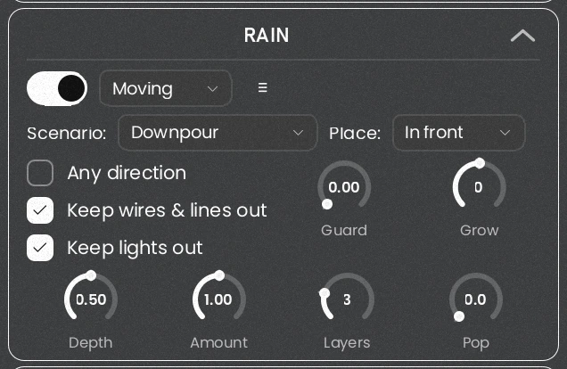
DepthCrafter struggles to detect rain, so in a plain splat the rain follows the shape of whatever object it falls in front of: the drops shift with the wall, not in front of it. Rain takes each frame's rain out, using the frames around it, warps the scene without it, then warps the rain on its own at depths of its own and adds it back to both eyes. (Most other particles -- snow, sparks, dust -- DepthCrafter picks up by itself; rain is the one it sees through.) They go through the same Disparity, Convergence, Pop-Out and Pop Out Boost as the scene, so the nearest drops come out the way the nearest objects do. Everything here is saved with the clip, and a clip with Rain on shows three blue streaks in Upcoming Jobs once its sidecar is saved. Rain needs tuning for each scene, so Beginner Mode hides it.
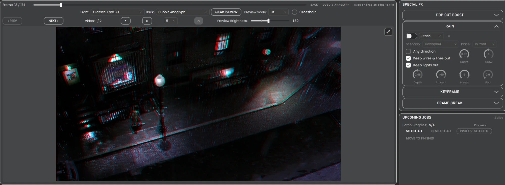
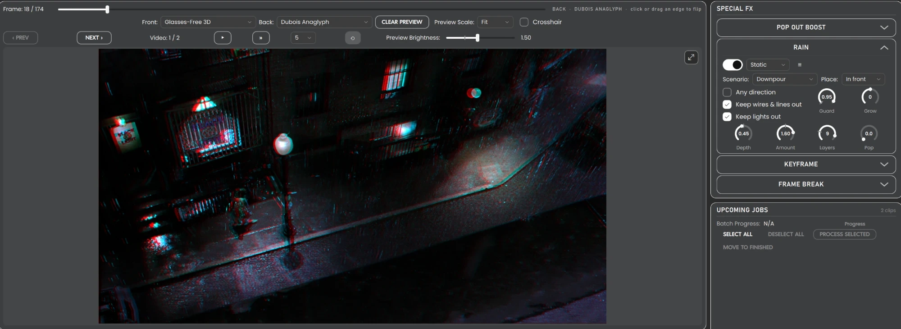
- The switch turns Rain on or off for the clip. Beside it, the camera: Moving lines the neighbouring frames up on each frame first (any shot, camera or people moving); Static is for a locked-off shot, simpler and a little cleaner.
- Scenario: Downpour for sharp streaks -- a storm, a lit downpour; Soft (out of focus) for wide, faint rain, in close-ups or behind a shallow focus; Mist (dense fine) for a dense sheet of fine rain in a backlit haze. Soft and Mist work best with Moving.
- Place: where the drops go in depth. In front puts them on planes from the middle of the scene out toward you, the same all over the frame -- rain in the air between you and the scene. In place puts each one at the scene's own depth where it is, lifted a little by its layer -- rain falling far off stays with what's behind it instead of floating in front.
- Any direction: for rain that doesn't fall one way, looking up into it or coming at the lens. Slower.
- Keep wires & lines out (on by default): long, thin, bright things that run on through the frame -- wires, cables, ropes, a kerb's edge -- stay with the scene.
- Keep lights out (on by default): lamps, lit windows and signs stay with the scene. When the camera moves, a light lands a little off in the frames around it, and what is left over can be taken for a drop; no rain is taken on or right around a light. (Guard doesn't help there: it only protects what is near you.)
- Guard: takes no rain where the scene is near -- people standing in the rain, whose clothes' moving reflections can look like rain. 0 is off.
- Grow: grows (+) or shrinks (−) the cut-outs, in pixels at 1080p. Grown, they take in their glow and tips, but never more light than the frame has there, so no dark edges are cut into the scene; shrunk, their edges stay painted on the scene.
- Depth: how strongly the drops get depths of their own. 0 leaves each one at the scene's depth right where it is, the same as Rain off; 1 is the full placement (In front: the nearest a whole scene's depth in front of the scene's nearest part).
- Amount: how strongly they go back in -- 1 as they were, less to thin them, more to bring them out.
- Layers: how many depth planes they're spread over (1 to 10). Rain is shared out by streak length, the longest streaks on the nearest plane.
- Pop: extra Pop-Out for the rain alone, in the same units: the nearest drops get all of it, farther layers less, and the scene none.
- The ≡ button beside the camera opens the layer controls: Spread, the distance between the layers (1 as it was, lower draws them together toward the nearest plane -- 0 puts them all on it -- higher spreads them further back, up to twice as far); Spacing, how they share that distance (1 even, higher crowds them toward the nearest plane, lower toward the farthest); and Convergence, the rain's own screen plane, from the scene's (0 the scene's; + puts them further back, − brings them out, the scene staying where it is). With In place, Spread sets how far the layers lift off the surface.
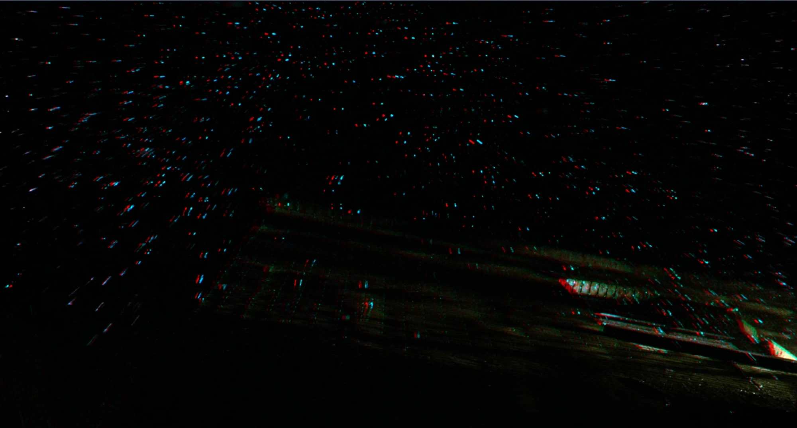
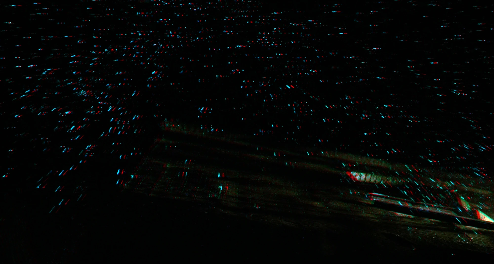
8e Fixing problem areas
- Hole Shift opens a window showing the frame's holes. Click the ones to move and nudge them with the X and Y knobs, without changing their shape.
- Detect Text masks burned-in subtitles and captions so they stay flat and readable instead of being warped into the 3D. See below.
- Edit Depth Map opens the clip in the Depth Map Editor, to fix the depth of an object by hand (Part 3).
Detect Text
Load the clip in the preview and press Detect Text. A window opens on the same frame.
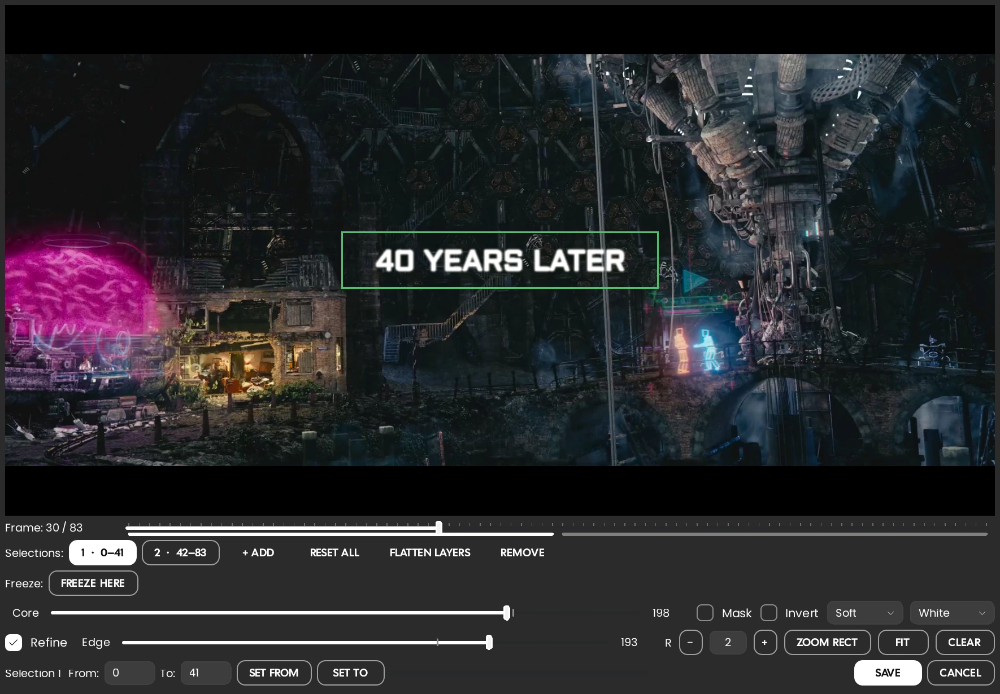
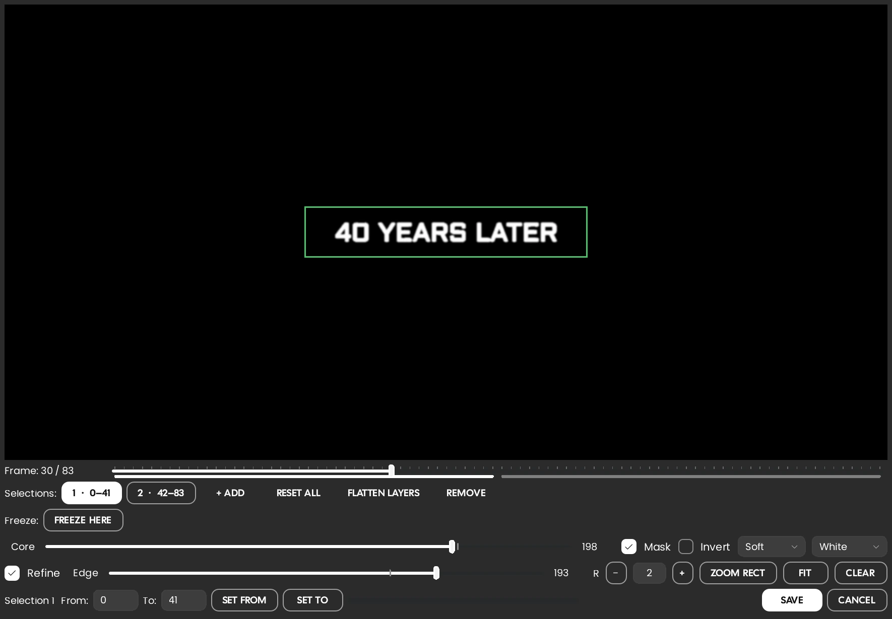
- Draw a box over where the text sits. Only text inside it is picked up.
- Tune what counts as text with Core and Edge (and Refine), watching the mask on the picture. Zoom Rect zooms in on the box.
- Set the frame range. Step to the first frame with the text and press Set From (or I), then to the last and press Set To (or O). The slider moves one frame at a time, and the range is marked on it.
- Press Save. Studio writes the mask as a video beside the clip
(
<clip>_submask.mp4), and Splatting uses it from then on. The mask video is never treated as a clip of its own.
- Several bits of text in one clip? Press + Add for each one. Every selection has its own frame range, box and Core / Edge settings; click its chip to edit it. Save puts them all into the one mask.
- Text that fades in or out loses the detection as it fades. Find a frame where it's caught well and press Freeze Here: that frame's mask is used, at full strength, for the whole selection. Click it again to unfreeze.
- Lots of text, like opening credits? When the list gets long, press Flatten Layers. It saves the mask with every selection so far, then sets them aside: they stay in the mask, and you still see them on the picture and as faint marks on the slider, but they leave the list. The next selection you add starts fresh. Flatten as often as you like.
- Remove deletes the current selection. With none left, Save becomes Remove Mask and takes the clip's mask away.
- Reset All (it asks first) starts the clip over: every selection, range, freeze and setting is erased.
Once a clip has a saved mask, four more knobs appear in Splatting, next to Dilate and Blur. They only affect the text, and they're saved with the clip:
- Text Grow widens the mask by that many pixels (below 0 shrinks it).
- Text Soften feathers its edge, so the flat text blends into the 3D around it.
- Text Clean takes DepthCrafter's own copy of the text out of the depth map, filling it from the background around it, so its warped edges don't stick out past the mask. It's how far past the mask to clean, in pixels; 0 is off. Start around 8 to 12, and raise it if warped edges still show around the letters.
- Text Conv sets where the text sits in depth: its own Convergence, as an offset from the clip's. At 0 it sits flat on the screen. Above 0 sets it back behind the screen, below 0 brings it out toward you, the way the Convergence knob moves the scene. Small values go a long way.
8f Sidecars and Multi-Map
A sidecar is a small file saved beside a clip's depth map (ending in
.fssidecar) that holds that clip's own settings: Disparity, Convergence, borders,
Special FX, keyframes. Create Sidecar (then
Update Sidecar) saves the preview's settings for the clip showing. When the
batch reaches that clip, it uses them, and so do the later stages.
That's how you give every shot its own 3D: go through the clips in the preview, set each one, save its sidecar, then convert them all with Start.
Multi-Map lets you keep several versions of the depth maps in subfolders of the DepthMaps folder and switch between them per clip, to compare and pick the best.
8g Output
Process Resolution decides what's made:
- Enable Full Res: the full-size result, in
hires. Inpainting and Merging use it to keep the final picture sharp. - Enable Low Res (on from the start, as Full Res is): the smaller copy Inpainting works on, in
lowres, at the Width and Height set below it. Bigger keeps more detail but makes Inpainting slower. The preset button next to them works like DepthCrafter's, with your own sizes from Settings > Splatting > Custom Resolution Presets: the same editor as DepthCrafter's, suggesting four sizes for each shape -- 512, 640, 768 and 960 high, each with the width nearest the shape -- and taking any exact size you type in, in multiples of 16, which both Inpainting versions can use. If you type your own size into Width and Height, keep both numbers multiples of 16. It's only the size the fill is made at: Inpainting's Hi-Res Blend puts it back on the full-size picture. - Auto Size for the Loaded Clip (off until you tick it): loading a clip into the preview fills Low Res Width and Height with the size picked for its shape (the Auto Size picks in that same Settings editor; 768 high by default). In a batch, every clip of another shape runs its Low Res pass at its own shape's pick, so a chapter that switches aspect ratios gets the right size for every clip.
- Both are on from the start: keep them that way for the normal pipeline (Beginner Mode does this for you). Dual Output Only, also on from the start, keeps just what Inpainting needs for the right eye, to save space; ffmpeg (on too) decodes the clips with FFmpeg, so the colours match what Resolve or VLC show (a little slower).
- Batch: how many frames go to the graphics card at once. Higher can be faster but needs more memory. 10 is a safe full-size batch; on a 16 GB card, keep full-size batches to about 20 and smaller ones to about 30.
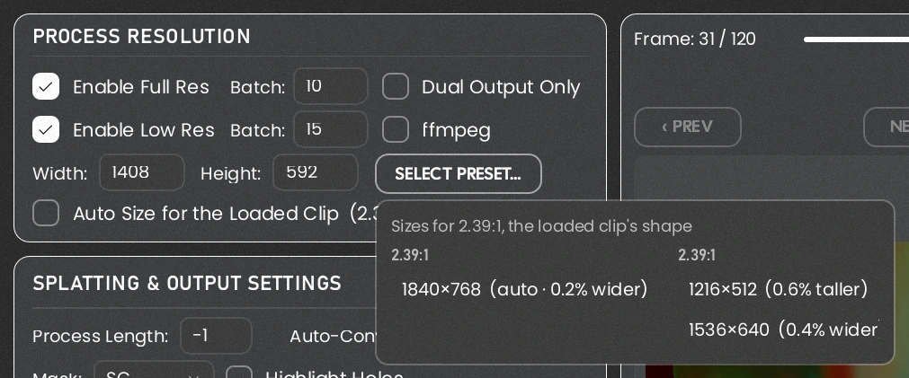
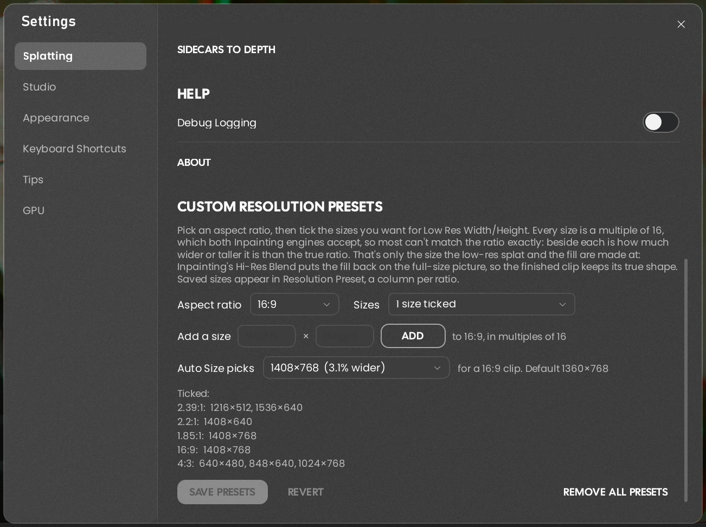
Splatting & Output Settings holds the choices you make once for a project: Mask and Warp (how holes are found and how the picture is shifted; SC is the standard), Auto-Converge (works out Convergence for you), Border mode, and the Mesh settings for the Mesh Warp preview. Encoding Options… sets how the files are saved; the defaults are high quality.
- Full Res CRF and Low Res CRF set the quality of each result (lower is better quality and bigger files).
- Enable DNxHR saves the full-size result as DNxHR (a
.movmade for editing) instead of H.264 / H.265, so the picture stays visually lossless as it passes through Inpainting and Merging. The files are very large: several GB per minute. - Container: the file type of the H.264 / H.265 results, MP4 (the
default) or MKV. An MKV cut short by a crash or a full disk still plays up to where it stopped.
Inpainting and Merging read either, and they have the same choice in their own Encoding Settings.
With Enable DNxHR on, the files are always
.mov. - DNxHR Profile: match it to your source. 8-bit (SQ / HQ) suits 1080p Blu-rays and web rips; 10-bit (HQX / 444) is for HDR and 10-bit SDR sources, such as 4K Blu-rays.
When something isn't right
| Rain looks painted on the wall | Turn on Rain with Rain, and pick the Scenario that matches it. |
| Rain barely picked up | Try another Scenario (Soft for faint, out-of-focus rain; Mist for a dense haze), or Any direction. |
| Lamps or lit windows taken as rain | Keep Keep lights out on. Guard won't help: it only protects what is near. |
| Wires, cables or clothing taken as rain | Keep Keep wires & lines out on; raise Guard for people standing in the rain. |
| Far-off rain floats in front of what's behind it | Set Place to In place. |
| Boosted objects' outlines bend | Lean on Pop-Out and turn Pop Out Boost's Strength down. |
| Boost catches things you didn't mean | Depth alone can't tell two things at the same depth apart. Select just the object in the Depth Map Editor (Part 3) and push it nearer. |
| 3D is uncomfortable to watch | Lower Disparity, or raise Convergence so less pops out of the screen. |
| Outlines shimmer or look ragged | Raise Blur X / Y a little, or Dilate X so the depth covers the whole object. |
| Pop-out objects cut off at the frame edge | Add Border Width, or let Border work it out (Auto). |
| Subtitles warp | Detect Text (8e). |
| Warped edges around masked text | Raise Text Clean, or Text Grow if the mask misses part of the letters. |
| An object sits at the wrong depth | Fix its depth in the Depth Map Editor (Edit Depth Map, Part 3). |
| Out of memory, or very slow | Lower the Batch sizes. Too big a batch spills into normal memory and slows to a crawl before failing. |
9 Inpainting #
The Splatting stage creates holes in the frame where the image was warped. Inpainting uses generative AI to fill in those gaps for a much cleaner right eye view. It looks at the frames around each hole, works out what was probably behind the object, and paints it in, keeping it steady from frame to frame.
| Reads | Splatting's smaller results from the chapter's lowres
folder (the AI works at that size), and the full-size ones from hires to blend the
fills into the full-size picture. |
| Writes | The filled right eye for each clip into the chapter's Inpainted folder. |
| Then | Each finished clip's Splatting results move into finished,
ready for Merging. |
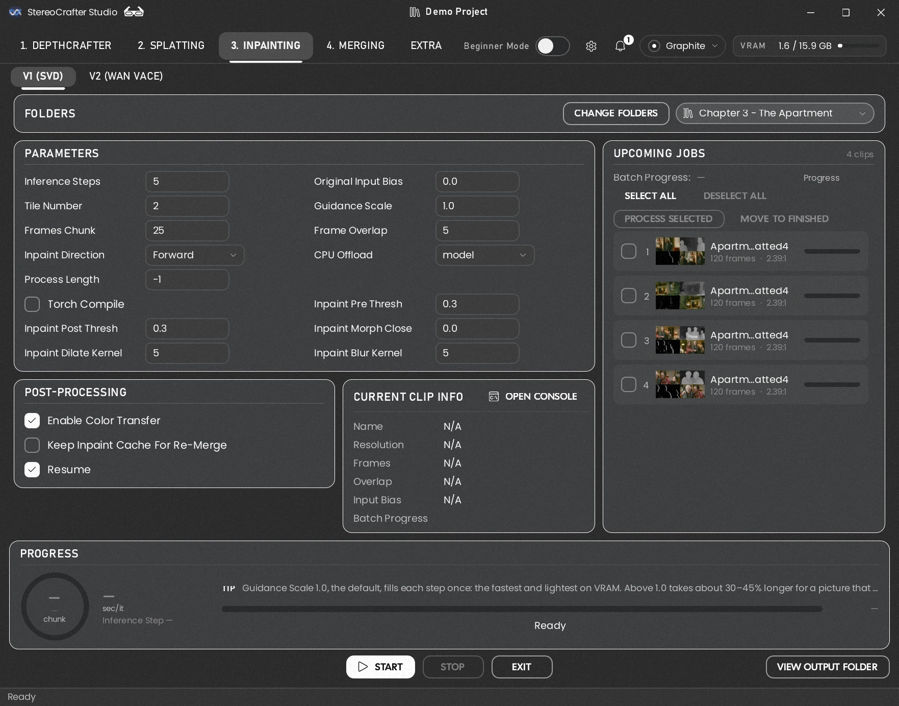
1 2 3 4 5 6 71 V1 or V2
The tab holds two inpainting engines. V1 (SVD) is the standard one, and everything in this section is about it. V2 (Wan VACE) is experimental and meant only for problem scenes (below).
2 Folders
- Lo-Res Blend Folder: Splatting's
lowresresults, the ones the AI fills. - Hi-Res Blend Folder: Splatting's
hiresresults. The fills are blended into these, so the finished eye keeps its full sharpness. - Output Folder: where the filled clips go.
Picking a chapter fills all three. Otherwise Import from Splatting fills the two inputs from the last Splatting run.
3 Parameters
- Inference Steps: 5 for a quick test, 10–15 for real runs; 25 is the model's limit, and too many can add artifacts of their own.
- Frames Chunk: how many frames the AI fills at once. 25 is as high as it goes well; higher and pans can come out scrambled. Lower it only if you run out of memory.
- Frame Overlap: how many frames each chunk shares with the one before, so the fills blend where chunks meet. Raise it (10 is common) if you see a seam; those frames are filled twice, so it costs time.
- Original Input Bias: where chunks join, how much to lean on the original picture rather than the frames already filled. Higher invents less; lower keeps the fills more consistent. 0 = off; Studio starts at 0.1.
- Guidance Scale: how much extra effort the AI puts into each step. Leave it at 1.0: each step is filled once, the fastest and lightest on graphics memory. Above 1.0 each step is filled twice, about 30–45% slower, for results that look almost the same: in busy scenes 1.0 can keep a touch less fine detail, hard to see unless you look for it. Hidden in Beginner Mode.
- Tile Number: splits each frame into a grid (2 = 2×2) and fills each piece separately, so big frames fit in memory. 2 is the default, and right for 16 GB cards; 1 = no splitting.
- Inpaint Direction: Forward works through the clip from the start; Reverse from the end; Both does one then the other.
- CPU Offload: keeps parts of the AI in normal memory to save graphics memory. model suits most cards; sequential saves the most but is slowest; none is fastest.
- Process Length is for testing: only the first so many frames of each clip. To run just one clip, right-click it in Upcoming Jobs and choose Inpaint This Clip Now.
- Torch Compile: prepares a faster version of the model when a run starts. The first chunk takes about 10 minutes longer while it does, then the run is roughly 10% faster. Worth it for a long unattended chapter, not for a quick test.
- The Inpaint … Thresh / Kernel settings shape the outline of the holes the AI fills. Dilate Kernel grows it so the fill covers the very edge of each hole; Blur Kernel softens it. The defaults suit most clips.
4 Post-Processing
- Enable Color Transfer: matches the fills' colours to the original picture. Leave it on. It runs on the graphics card, in full precision, so smooth gradients don't band.
- Keep Inpaint Cache For Re-Merge: keeps the filled frames so a rerun can redo the finish (Color Transfer, a new Hi-Res Blend clip) without filling again. Takes disk space.
- Resume: finished clips move into
finished, so a stopped run carries on with the rest. Leave it on.
5 Current Clip Info
The clip being filled, its size and length, the overlap and bias it's using, and how far through the batch you are.
6 Upcoming Jobs
To the right of the settings: the Lo-Res splats that Start will inpaint, each with its own bar while the batch runs. Tick clips and press Process Selected to do just those, or right-click one for Inpaint This Clip Now, Move to Finished (the splat, its sidecar and its Hi-Res splat), Play Lo-Res Splat or Play Hi-Res Splat.
7 Progress and stopping
- The ring counts the chunks of the current clip, with the time per step beside it; the bar shows the clip.
- Stop asks how: now, or after this chunk, which keeps the finished chunks so the next Start on that clip carries on from there.
- While a folder of clips runs, Stop After Clip lets the current clip finish, then stops before the next. Click it again to carry on instead.
- View Output Folder opens the results, even mid-run.
In Settings
- Use SageAttention: a faster way to run the AI, on cards that support it. Use Sage Attention (for V2) is the same for Inpainting V2, and Load / Save V2 Settings keep V2's settings in a file of their own.
- Encoding Settings (how the files are saved, for V1 and V2 alike: 10-bit (Main10) writes
10-bit HEVC; Enable DNxHR, off by default, writes DNxHR .mov files for an all-DNxHR pipeline;
Container picks MP4 or MKV for the other files),
Load / Save Settings,
Reset to Default, Restore Finished (moves clips back out of
finishedto run them again) and Enable Debugging.
Inpainting V2 (experimental)
Switch to V2 (Wan VACE) at the top of the tab. V2 is a much larger model and more demanding on hardware, so expect significantly longer wait times. Measured on a 16 GB RTX 5060 Ti (MMGP streaming, 5 steps, 2 tiles per axis): about 10 seconds per frame at 1408x768 per eye, so a 4-second clip takes about a quarter of an hour; 20 steps take about 3.5 times as long.
Its page is simpler: input and output, chunk and overlap, tiles, steps and seed, and a VRAM / Performance panel to fit it to your card. The offload mode starts at MMGP streaming, which runs on a 16 GB card; check it against yours before starting. Torch Compile there makes the chunks faster after a first one that takes several minutes longer while it compiles: worth it for a long unattended run. It works with the offload modes None, FP8 resident and MMGP streaming; the others run without it. (SageAttention for V2 is in Settings.) Upcoming Jobs beside the settings lists the clips a Start would run, as V1's does: tick some and Process Selected, or right-click one for Inpaint This Clip Now, Move to Finished or, once it's done, Send to Merging.
Leave Tiles / axis at 2 on a 16 GB card: at 1, an 81-frame chunk runs out of memory. Tile overlap is 64 by default: about 9% faster than 128, with no visible seam where the tiles meet. More Inference steps cost time in proportion and help little.
Stopping and crashes: each chunk V2 finishes is kept as it goes (in the output folder's
_inpaint_resume), so a clip you stop -- or one cut off by a crash -- carries on from its last
finished chunk at the next Start, and comes out the same as an unbroken run. Only the finished chunks'
decoding is done again, a few seconds each. Change a setting that changes the result (chunk, overlap,
tiles, steps, seed, prompt or offload mode) and the clip starts over. A finished clip deletes its chunks.
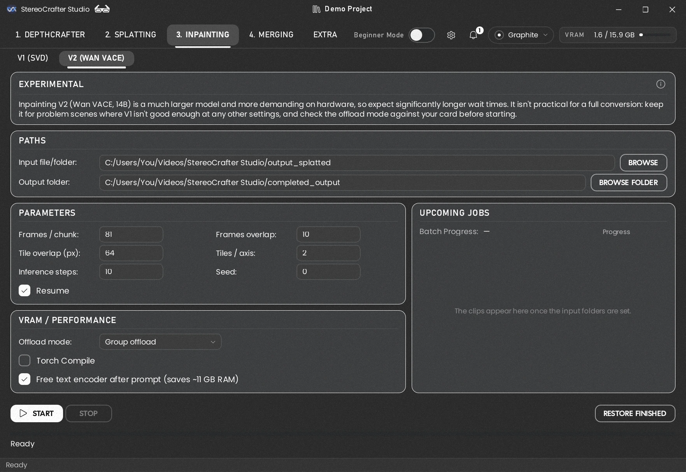
When something isn't right
| A visible seam where chunks join | Raise Frame Overlap (10 is common). |
| Pans come out scrambled | Keep Frames Chunk at 25 or below. |
| Fills look a different colour | Turn on Enable Color Transfer. |
| Thin lines left at the edge of the fills | Raise Inpaint Dilate Kernel a little. |
| Out of memory | Raise Tile Number, set CPU Offload to sequential, or lower Frames Chunk. |
| Too slow | Turn on Use SageAttention; for a long run, Torch Compile. |
| "Failed to save chunk checkpoint" (V2: "Could not keep chunk checkpoint") | The drive is full. Free some space; the run carries on, but can't resume from the chunks it couldn't save. |
10 Merging #
Merging is the last stage. It takes Inpainting's filled-in right eye and blends just the filled areas into Splatting's full-size right eye, so everything that didn't need filling keeps its full sharpness. Then it puts the left and right eyes together into the finished 3D video.
| Reads | The filled right eyes from the Inpainted folder, your original clips
(the left eye) from the Source folder's finished folders, and Splatting's full-size
results from hires, which carry the outline of the holes (the mask). |
| Writes | The finished 3D video for each clip into the chapter's Merged folder. |
| Then | With Resume on, each clip's inputs move into
finished. |
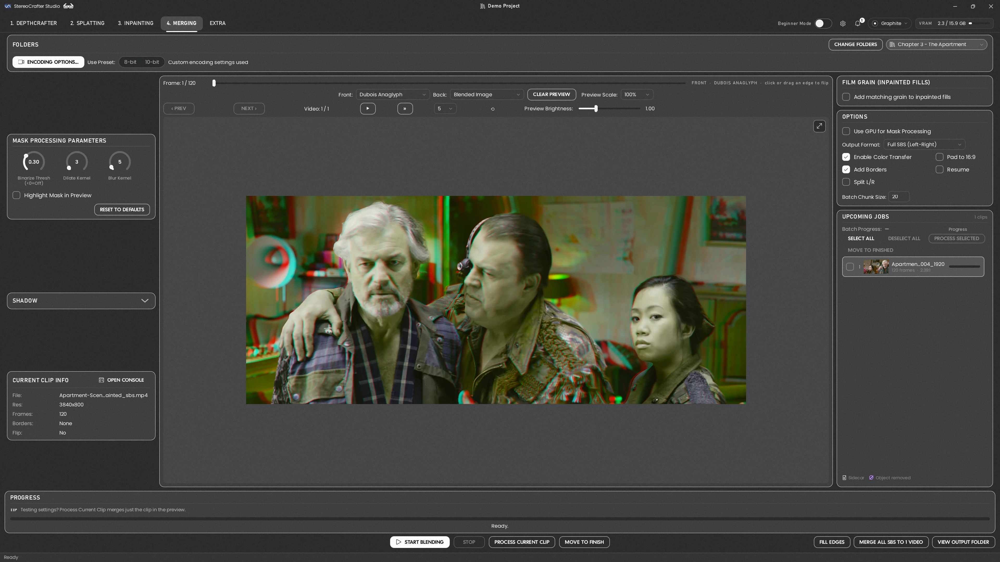
1 2 3 4 5 6 7 8 91 Folders
A chapter fills in all four: Inpainted Video Folder, Original Video Folder, Mask Folder and Output Folder. Otherwise Import from Inpainting (or Import from Inpainting V2) fills them from the last run. Encoding Options… and the 8-bit / 10-bit presets set how the finished video is saved.
2 The preview
The same kind of preview as Splatting's: two views, click to flip between them, with the frame slider, play, the full-screen icon in the picture's top-right corner (Full Preview) and the brightness control. Preview Scale starts at Fit, as Splatting's does: the picture fills the space it has; a percentage, the mouse wheel or a double-click zoom picks a size instead. The views to know:
- Blended Image: the finished right eye, fills blended in.
- Processed Mask: where the fills go, after the mask settings below.
- Inpainted Right Eye, Warped (Right BG) and Original (Left Eye): the ingredients, to compare.
- The anaglyph, side-by-side and Wigglegram views, to judge the 3D, and Glasses-Free 3D on an SR 3D monitor, as in Splatting. All of them: Appendix D.
The preview doesn't show film grain or colour correction; those are only added on export and in the Grain Match Preview.
3 Mask Processing Parameters
The mask decides which parts of the right eye come from the fill. Shaping it right hides the joins:
- Binarize Thresh: turns the mask into hard black and white before the rest. Below 0 switches it off and keeps the soft mask.
- Dilate Kernel: grows the mask, to cover thin dark lines at the edge of the fills.
- Blur Kernel: feathers the mask, so the fills fade in instead of ending in a hard edge.
Highlight Mask in Preview shows the mask over the picture; Reset to Defaults puts the mask settings back.
4 Shadow
A soft shadow cast from the edge of the mask into the fill, which helps the fill sit behind the object in front of it. Open the section to set how far it reaches (Shift), how it fades (Gamma), and how strong it starts and ends.
5 Upcoming Jobs
The chapter's clips, as in Splatting: click one to preview it, tick clips and press Process Selected to merge just those, or Move to Finished to set them aside. Right-click a clip for Merge This Clip Now or Move to Finished on that clip alone.
6 Film Grain (Inpainted Fills)
The AI's fills are clean, so on film footage they can look smoother than the grain around them. Add matching grain to inpainted fills adds film-style grain only where the fills are, fading with the mask; the original picture is never touched.
- Auto-match grain per clip on render measures each clip's own grain and sets the amount for it. A clip you've tuned by hand keeps your setting.
- Grain Match Preview… shows the fills with grain next to the original, with magnified close-ups and the measured grain of each, so you can tune it by eye.
7 Current Clip Info
The clip, its size and length, and the borders and flip it carries from Splatting.
8 Options
- Output Format: the kind of 3D video to make.
- Full SBS (the default): both eyes side by side at full size. The best quality.
- Half SBS: both eyes squeezed into one frame; works with more TVs and players.
- Full SBS Cross-eye, Double SBS, Split L/R Output (two files), Right-Eye Only, and two Anaglyph versions for red/cyan glasses.
- Enable Color Transfer: matches the fills' colours to the original. Leave it on.
- Pad to 16:9: adds black bars above and below so wide movies are a standard TV shape, which some 3D players need.
- Add Borders: applies the edge borders each clip got in Splatting.
- Resume: finished clips move into
finished, so a stopped batch carries on with the rest. - Split L/R: also saves each Full SBS video as separate left and right files; Delete SBS Videos then keeps only those.
- Use GPU for Mask Processing is faster, but it blends a whole chunk of full-size frames on the graphics card at once, and keeps that memory for the rest of the batch: at a large Batch Chunk Size it can fill a 16 GB card, even while the card is idle during encoding. Turn it off, or lower Batch Chunk Size, if the card is short on memory -- most of a Merging run is the encode, so it costs little time. Batch Chunk Size is how many frames are held at once.
Erased objects put back. On static shots that don't have any camera movement, Inpainting has to guess what's behind the foreground objects (a lamp post, a railing, a closeup shot through a fence, cage/jail bars) it sometimes can't see enough to invent good detail. Erase in the Depth Map Editor takes the object out first, so the scene behind it is filled in from the frames it can pull from but also generatively fill the holes created from the object removal. With Put back on there, Merging then lays the object back over both eyes at the depth you set, and the gap beside it shows that recovered background instead of a guess. Over, the usual choice, puts the original's pixels back inside the object's outline, for a solid object. Add puts back only what erasing took away, for something you see through. Put Back works in the preview and the batch alike, flipped clips included.
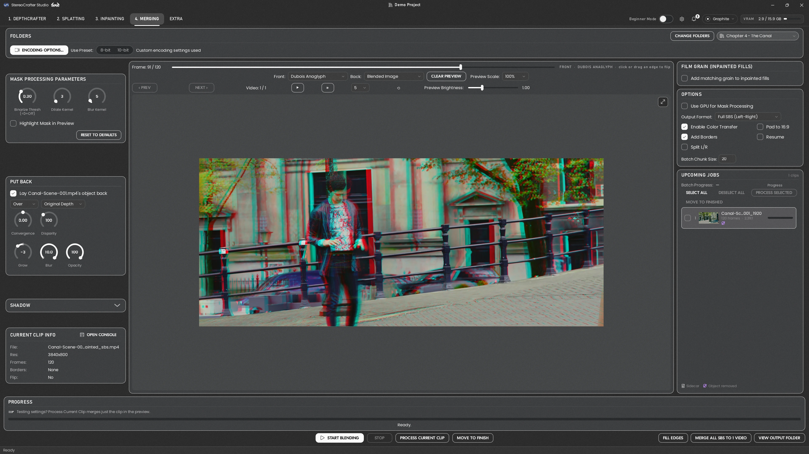
When the clip on screen has one, a Put Back section shows in the left column with its controls, saved with the clip and shown live in the preview:
- Depth (Add): Glass Plane lays what came off a window -- dust, a reflection -- on the glass itself. A depth map sees through glass, so each window gets a plane fitted to the depth of the car or frame around it, and the layer is warped at that plane, as Splatting warps the scene. Convergence moves it forward (−) or back (+) and Disparity sets how strongly its slope reads. Parallax moves it by one amount instead.
- Depth (Over): Original Eyes cuts the object from the original clip's own merge -- the conversion made before erasing, the object still in it: its left eye inside the object's mask, and its right eye inside the mask moved to where the object is there (measured between the two eyes). Every pixel of the object is what that conversion rendered, so its edges stay as they were. Choose that merge's folder with Choose…; its depth is that conversion's, so Convergence and Disparity don't apply. Until a merge is found it uses Original Depth, and says so. Original Depth warps the object with the original clip's depth map at that map's own scale. Depth Map puts the object at the depth the original clip's depth map gives it -- the one made before erasing, with the object in it -- pixel by pixel, moved exactly as Splatting moved the scene (the clip's own Disparity, Convergence, Gamma and keyframes). A slanted or bowed thing, like a cage's bars, keeps its shape in 3D. Parallax moves the whole object by one amount.
- Convergence (Depth Map) moves the whole object off the depth its map gives it, keeping its shape: + sets it back, − brings it out (−2 to 2). Disparity (Depth Map) is how much 3D the object gets, in % of the scene's: 100 as Splatting gave the scene, less flattens it toward the screen, more deepens it. Parallax is the one amount otherwise.
- Grow widens the object's mask (+, to take in more of its edge) or narrows it (−, to leave a halo of old background out); Blur softens its edge; Opacity is how much of it comes back.
Depth Map needs the clean clip's depth map in Splatting's depth folder (where Splatting read it) and an erase made by this version of Studio, which keeps the original depth map for it. When the clean map isn't there, the section says so in yellow: the object then uses Parallax, and Convergence and Disparity do nothing until Splatting's Depth Maps points at it.
9 The buttons
- Start Blending merges every clip in the folders.
- Process Current Clip merges only the clip in the preview, to test your settings first.
- Stop stops once the piece being worked on is finished.
- Move to Finish moves the clip in the preview into
finishedand goes to the next. - Fill Edges opens Extra > Edge Fill on this stage's folders, to refill the strip a deep 3D shift leaves at the frame's edge -- see 11.
- Merge All SBS to 1 Video puts the whole movie back together -- see 10.
- View Output Folder opens the finished videos.
10 Merge All: the whole movie
Once the scenes are merged, Merge All SBS to 1 Video joins them into one video:
every chapter in order, and every scene in the order it plays. The scenes are the clips Scene Cut made,
found in each chapter of the Source folder; each one's merged output is looked for in that chapter of
the merged folder, subfolders included. Split _L / _R files are joined side by
side. For a TV show it's the episode Merging's chapter belongs to.
- When every scene has its merged output, it asks you to confirm and names the file it will write.
- When some don't, it lists them, each with the stage it still needs: Play opens the scene's clip in your media player, to see which scene it is, and Send to loads it into that stage with the chapter's folders. Merge Anyway is for scenes you left out on purpose: each missing scene becomes black, for as many frames as it has, so the sound still lines up.
- It runs like any Merging job: the bar shows it, Stop ends it and discards the unfinished file.
How it's written is under Encoding Options… › Merge All:
Layout (Full SBS, Half SBS, or L and R files, a whole-movie
file per eye), the codec and quality, the container, and the Movie (sound) --
the movie file whose soundtrack goes in, every audio track of it (use MKV for TrueHD / Atmos). Leave
that empty for no sound. The file goes in the project's folder, as <project> - 3D Full
SBS.mkv, unless you set an Output Folder.
11 Edge Fill: the strip at the frame's edge
With a lot of depth, the 3D shift uncovers a strip at the frame's edge that nothing in the picture can fill -- usually on the right eye's left side. Inpainting guesses it from a thin margin, and the guess shows as a dark bar or the edge smeared across. Extra > Edge Fill refills that strip with ROSE, on merged clips. Merging's Fill Edges button opens it on Merging's Output Folder and Mask Folder.
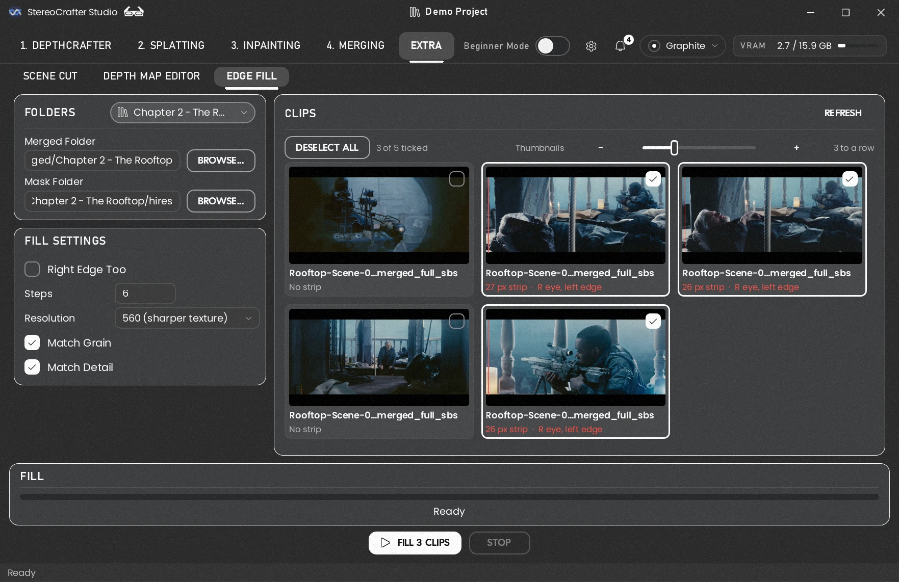
- On the left: Merged Folder, the merged clips (Full SBS, or
_L/_Rfiles), and Mask Folder, their splats (or itsfinished), which say how wide each strip is. In a project, the chapter dropdown above them points both at a chapter -- its Merged folder and its splats -- as the stages' dropdowns do; editing a folder by hand switches back to Manual paths, and the pick is kept per project. A project Edge Fill hasn't been on yet takes Merging's chapter or folders. Then the fill's settings. - On the right, the clips as a grid of stills, the ones it can fill ticked. Each still is the eye with the strip, at the frame where it's widest, with a red line where the strip ends and its width under it -- so you can see which clips have a dark bar. A clip with no strip, or one already filled, is left unticked. Select All ticks every clip with a strip (Deselect All unticks them). Click a still to tick or untick it; right-click it for Fill Just This Clip, or to Play the clip in your default player -- the eye with the bar first -- and watch the whole thing. The Thumbnails slider (or its − / +) makes the stills bigger or smaller, fewer or more to a row. Each clip's strip is measured once and remembered; it is measured again only when the clip's splat mask changes. Refresh looks through the folders again. While another stage's job runs the grid waits -- looking means reading every mask -- and looks once that job ends. A filled clip's tile is light green, as the clip lists show a finished clip -- one filled in this run as soon as it's done.
- Open Console, under the fill's settings, shows each clip's fill as it goes, with its progress bars, on the console's Extra tab. It works during a fill too.
- To fill one clip from Merging's Upcoming Jobs, right-click it there and pick Fill Edges: its merged clip is filled straight away (once it has been merged).
- Steps is how many steps ROSE takes -- type any number. 6 looks the same as 50 on an edge strip; fewer is quicker but softens fine detail.
- Resolution is how big ROSE works the edge: 560 keeps more texture (a wall's ridges, grain) and is quicker; 784 carries lines that run into the edge -- a roofline, a railing -- on straighter, a little softer and about twice as long. Native works the edge at the clip's own size, in overlapping tiles near ROSE's own size faded into each other: the sharpest and closest to the real picture (a wall's ridges and rivets, straight lines), about 2–2.5× 560's time. With 784 and Native the fill's colour is matched to the picture beside the strip (ROSE drifts a few levels at those sizes).
- Pre-fill is what ROSE starts from in the strip: it sees what is under its mask, and that steers its fill. Blur (the default) puts a wide blur of the picture beside the strip there, so ROSE invents what's behind it. Stretched copies the last column before the strip across it, which ROSE tends to keep as horizontal streaks -- though on a picture that really is horizontal lines, a building's floors, it can be the closer guess.
- Right Edge Too: Splatting leaves the strip on the right eye's left edge, so by default that is the only edge Edge Fill measures and fills. Tick it to look at the right eye's right edge as well, for a clip whose strip really is on that side; the clips are measured again when you change it.
- Match Grain gives the fill the film grain of the picture beside it, so the strip isn't smoother than the rest of the frame.
- Match Detail sharpens the fill to the picture's own fine detail: ROSE works the edge smaller than the frame, so its fill comes back softer. How much is measured on each clip, where ROSE repainted real picture just past the strip, and nothing is sharpened when the fill is already as sharp.
- The fill follows the splat mask row by row, frame by frame -- each row is filled only as far as its hole reached, as Inpainting's Hi-Res Blend does -- so the real picture next to a narrower hole is kept.
- Each clip's files are written again in their own format (DNxHR stays DNxHR; H.264 / H.265 with
Merging's encoder settings) with only the strip changed; the originals go to the Recycle Bin (on a
drive without one, to
edge_fill_originals, a second fill's under a numbered name). A clip with a file open in another program -- a player -- isn't touched: close it and fill again. A strip narrower than about 12 px (at 1920 wide) is left to Inpainting's own fill. - Fill runs the ticked clips as a job of its own: the bar shows it, Stop leaves the clip being filled as it was -- all its files: they're only swapped in once every one is written -- and the grid looks again when it ends. A short scene takes about half a minute, most of it ROSE starting. The console's Extra tab follows it: each clip's strip, ROSE's size and steps, the grain and detail, the files written, a bar for each stretch (reading, each ROSE window's steps with their s/it, blend and write) and the time it took.
In Settings
Save Preview Frame and Save Preview as SBS save the frame on screen as a picture. There's also Load / Save Settings, Reset to Default, Restore Finished, Enable Debug Logging and a User Guide.
When something isn't right
| Thin dark lines around the fills | Raise Dilate Kernel. |
| Hard edges where the fills start | Raise Blur Kernel. |
| Fills look smoother than the film | Turn on the film grain, and check it in the Grain Match Preview…. |
| Fills a different colour | Turn on Enable Color Transfer. |
| The player shows it squashed or stretched | Try Half SBS, or Pad to 16:9. |
| Out of memory, or the VRAM meter full during a merge | Turn off Use GPU for Mask Processing, or lower Batch Chunk Size. |
| The batch won't start: no original | The Original Video Folder is wrong, or the clips it names aren't in it. Fix the path and start again. |